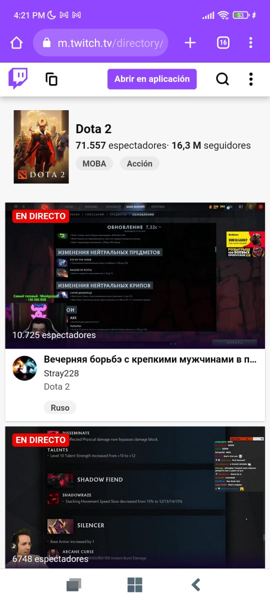

Twitch TV

This page uses proximity in an excellent way, all the live streams that appear on the screen use all the space from right to left, also the descriptions and numbers implemented are in a readable font-size.